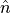

[1]:
import qTools.QuantumToolbox.operators as qOperators
# How-to-use functions in operators.py of QuantumToolbox¶
Each example is introduced in the order that they appear inside the file
[2]:
# Uncomment any (or both) of these two to print module docstrings
print(qOperators.__doc__)
help(qOperators)
]]
>>> jx0 = Jx(j=2, isDim=False)
(1, 0) 1.0
(0, 1) 1.0
(2, 1) 1.224744871391589
(1, 2) 1.224744871391589
(3, 2) 1.224744871391589
(2, 3) 1.224744871391589
(4, 3) 1.0
(3, 4) 1.0
>>> jx1 = Jx(j=5, sparse=False)
[[0. 1. 0. 0. 0. ]
[1. 0. 1.22474487 0. 0. ]
[0. 1.22474487 0. 1.22474487 0. ]
[0. 0. 1.22474487 0. 1. ]
[0. 0. 0. 1. 0. ]]
>>> jx1 = Jx(j=5, isDim=True)
(1, 0) 1.0
(0, 1) 1.0
(2, 1) 1.224744871391589
(1, 2) 1.224744871391589
(3, 2) 1.224744871391589
(2, 3) 1.224744871391589
(4, 3) 1.0
(3, 4) 1.0
Jy(j: float, sparse: bool = True, isDim: bool = True) -> ~Matrix
Creates the angular momentum (spin) `Y` operator for a given spin quantum number j
Either as sparse (>>> sparse=True) or array (>>> sparse=False)
Parameters
----------
:param `j` : integer or half-integer spin quantum number, or the dimension (then spin quantum number = (d-1)/2)
:param `sparse` : boolean for sparse or not (array)
:param isDim: boolean for whether j is spin quantum number of dimension
Returns
-------
:return: Angular momentum (spin) Y operator
Examples
--------
>>> jy0 = Jy(j=2, isDim=False, sparse=False)
[[0.+0.j 0.-1.j 0.+0.j 0.+0.j 0.+0.j ]
[0.+1.j 0.+0.j 0.-1.22474487j 0.+0.j 0.+0.j ]
[0.+0.j 0.+1.22474487j 0.+0.j 0.-1.22474487j 0.+0.j ]
[0.+0.j 0.+0.j 0.+1.22474487j 0.+0.j 0.-1.j ]
[0.+0.j 0.+0.j 0.+0.j 0.+1.j 0.+0.j ]]
>>> jy0 = Jy(j=2, isDim=False)
(1, 0) 1j
(0, 1) -1j
(2, 1) 1.224744871391589j
(1, 2) -1.224744871391589j
(3, 2) 1.224744871391589j
(2, 3) -1.224744871391589j
(4, 3) 1j
(3, 4) -1j
>>> jy1 = Jy(j=5, sparse=False)
[[0.+0.j 0.-1.j 0.+0.j 0.+0.j 0.+0.j ]
[0.+1.j 0.+0.j 0.-1.22474487j 0.+0.j 0.+0.j ]
[0.+0.j 0.+1.22474487j 0.+0.j 0.-1.22474487j 0.+0.j ]
[0.+0.j 0.+0.j 0.+1.22474487j 0.+0.j 0.-1.j ]
[0.+0.j 0.+0.j 0.+0.j 0.+1.j 0.+0.j ]]
>>> jy1 = Jy(j=5, isDim=True)
(1, 0) 1j
(0, 1) -1j
(2, 1) 1.224744871391589j
(1, 2) -1.224744871391589j
(3, 2) 1.224744871391589j
(2, 3) -1.224744871391589j
(4, 3) 1j
(3, 4) -1j
Jz(j: float, sparse: bool = True, isDim: bool = True) -> ~Matrix
Creates the angular momentum (spin) `Z` operator for a given spin quantum number j
Either as sparse (>>> sparse=True) or array (>>> sparse=False)
Parameters
----------
:param `j` : integer or half-integer spin quantum number, or the dimension (then spin quantum number = (d-1)/2)
:param `sparse` : boolean for sparse or not (array)
:param isDim: boolean for whether j is spin quantum number of dimension
Returns
-------
:return: Angular momentum (spin) Z operator
Examples
--------
>>> jz0 = Jz(j=2, isDim=False, sparse=False)
[[ 2 0 0 0 0]
[ 0 1 0 0 0]
[ 0 0 0 0 0]
[ 0 0 0 -1 0]
[ 0 0 0 0 -2]]
>>> jz0 = Jz(j=2, isDim=False)
(0, 0) 2
(1, 1) 1
(2, 2) 0
(3, 3) -1
(4, 4) -2
>>> jz1 = Jz(j=5, sparse=False)
[[ 2. 0. 0. 0. 0.]
[ 0. 1. 0. 0. 0.]
[ 0. 0. 0. 0. 0.]
[ 0. 0. 0. -1. 0.]
[ 0. 0. 0. 0. -2.]]
>>> jz1 = Jz(j=5, isDim=True)
(0, 0) 2.0
(1, 1) 1.0
(2, 2) 0.0
(3, 3) -1.0
(4, 4) -2.0
basis(dimension: int, state: int, sparse: bool = True) -> ~Matrix
Creates a `ket` state
Either as sparse (>>> sparse=True) or array (>>> sparse=False)
Parameters
----------
:param `dimension` : dimension of Hilbert space
:param `state` : index number for the populated state
:param `sparse` : boolean for sparse or not (array)
Returns
-------
:return : `ket` state
Examples
--------
>>> basis(2, 1)
(0, 0) 1
>>> basis(2, 1, sparse=False)
[[1]
[0]]
compositeOp(operator: ~Matrix, dimB: int, dimA: int) -> ~Matrix
Creates a composite operator from a sub-system `operator`, i.e. tensor product with identities of dimensions dimB & dimA
Parameters
----------
:param `operator` : operator of a sub-system
:param `dimB` : (total) dimension of the systems that appear `before` in the tensor product order
:param `dimA` : (total) dimension of the systems that appear `after` in the tensor product order
Returns:
:return: sub-system operator in the extended Hilbert space
Examples
--------
TODO Update these
>>> szQ1 = compositeOp(operator=sigmaz(), dimB=0, dimA=2)
>>> szQ2 = compositeOp(operator=sigmaz(), dimB=2, dimA=0)
>>> print(szQ1.A)
[[ 1. 0. 0. 0.]
[ 0. 1. 0. 0.]
[ 0. 0. -1. 0.]
[ 0. 0. 0. -1.]]
>>> print(szQ2.A)
[[ 1. 0. 0. 0.]
[ 0. -1. 0. 0.]
[ 0. 0. 1. 0.]
[ 0. 0. 0. -1.]]
create(dimension: int, sparse: bool = True) -> ~Matrix
Creates the bosonic `creation` operator
Either as sparse (>>> sparse=True) or array (>>> sparse=False)
Parameters
----------
:param `dimension` : dimension of the Hilbert space
:param `sparse` : boolean for sparse or not (array)
Returns
-------
:return: bosonic `creation` operator for dimension dimension
Examples
--------
>>> create = create(3)
(1, 0) 1.0
(2, 1) 1.4142135623730951
>>> create = create(3, sparse=False)
[[0. 0. 0. ]
[1. 0. 0. ]
[0. 1.41421356 0. ]]
destroy(dimension: int, sparse: bool = True) -> ~Matrix
Creates the bosonic `annihilation` operator
Either as sparse (>>> sparse=True) or array (>>> sparse=False)
Parameters
----------
:param `dimension` : dimension of the Hilbert space
:param `sparse` : boolean for sparse or not (array)
Returns
-------
:return: bosonic `annihilation` operator for dimension dimension
Examples
--------
>>> annihilation = destroy(dimension=3)
(0, 1) 1.0
(1, 2) 1.4142135623730951
>>> annihilation = destroy(3, sparse=False)
[[0. 1. 0. ]
[0. 0. 1.41421356]
[0. 0. 0. ]]
displacement(alpha: complex, dim: int, sparse: bool = True) -> ~Matrix
Creates the displacement operator for a given displacement parameter alpha
Either as sparse (>>> sparse=True) or array (>>> sparse=False)
Parameters
----------
:param `alpha` : complex number, the displacement parameter
:param dim: dimension of the Hilbert space
:param `sparse` : boolean for sparse or not (array)
Returns
-------
:return: Displacement operator
Examples
--------
>>> disp = displacement(alpha=1j, dim=4, sparse=False)
[[ 0.60605894+0.j 0. +0.6100857j -0.41242505+0.j 0. -0.30065525j]
[ 0. +0.6100857j 0.02280184+0.j 0. +0.34204129j -0.71434114+0.j]
[-0.41242505+0.j 0. +0.34204129j -0.56045527+0.j 0. +0.63150869j]
[ 0. -0.30065525j -0.71434114+0.j 0. +0.63150869j 0.02280184+0.j]]
>>> disp = displacement(alpha=1j, dim=4)
(0, 0) (0.6060589372864117+0j)
(1, 0) 0.610085698426889j
(2, 0) (-0.41242505189886125+0j)
(3, 0) (-0-0.3006552538647247j)
(0, 1) 0.610085698426889j
(1, 1) (0.02280183542861441+0j)
(2, 1) 0.3420412936689465j
(3, 1) (-0.7143411442030587+0j)
(0, 2) (-0.4124250518988613+0j)
(1, 2) 0.34204129366894637j
(2, 2) (-0.5604552664291825+0j)
(3, 2) 0.6315086890322961j
(0, 3) -0.3006552538647247j
(1, 3) (-0.7143411442030586+0j)
(2, 3) 0.6315086890322962j
(3, 3) (0.02280183542861464+0j)
identity(dimension: int, sparse: bool = True) -> ~Matrix
Creates the identity operator
Either as sparse (>>> sparse=True) or array (>>> sparse=False)
Parameters
----------
:param `dimension` : dimension of the Hilbert space
:param `sparse` : boolean for sparse or not (array)
Returns
-------
:return: identity operator for dimension dimension
Examples
--------
>>> identity = identity(3)
(0, 0) 1.0
(1, 1) 1.0
(2, 2) 1.0
>>> identity = identity(3, sparse=False)
[[1. 0. 0.]
[0. 1. 0.]
[0. 0. 1.]]
number(dimension: int, sparse: bool = True) -> ~Matrix
Creates the (bosonic) number operator
Either as sparse (>>> sparse=True) or array (>>> sparse=False)
Parameters
----------
:param dimension : dimension of the Hilbert space
:param sparse : boolean for sparse or not (array)
Returns
-------
:return: number operator for dimension dimension
Examples
--------
>>> numberArray = number(dimension=3, sparse=False)
[[0 0 0]
[0 1 0]
[0 0 2]]
>>> numberSparse = number(3)
(0, 0) 0
(1, 1) 1
(2, 2) 2
operatorPow(op: Callable, dim: int, power: int, sparse: bool = True) -> ~Matrix
Creates a quantum operator for given function reference `op` and raises to a `power`
Either as sparse (>>> sparse=True) or array (>>> sparse=False)
Parameters
----------
:param `op` : reference to the function (in here) for the operator
:param `dim` : dimension of the Hilbert space
:param `power` : power that the operator to be raised
:param `sparse` : boolean for sparse or not (array)
Returns
-------
:return: an operator raised to a power
Examples
--------
>>> squareSigmaX = operatorPow(op=sigmax, dim=2, power=2, sparse=False)
[[1 0]
[0 1]]
>>> squareSigmaX = operatorPow(op=sigmax, dim=2, power=2)
(0, 0) 1
(1, 1) 1
>>> cubedSigmaX = operatorPow(op=sigmax, dim=2, power=3, sparse=False)
[[0 1]
[1 0]]
>>> cubedSigmaX = operatorPow(op=sigmax, dim=2, power=3)
(1, 0) 1
(0, 1) 1
parityEXP(HamiltonianCavity: ~Matrix) -> ~Matrix
Creates the parity operator by exponentiation a given Hamiltonian
Keeps sparse/array as sparse/array.
Parameters
----------
:param `HamiltonianCavity` : dimension of the Hilbert space
Returns
-------
:return: Parity operator
Examples
--------
>>> ham = number(dimension=5, sparse=False)
>>> parityEXP = parityEXP(HamiltonianCavity=ham) # returns an array since ham is an array
[[ 1.+0.0000000e+00j 0.+0.0000000e+00j 0.+0.0000000e+00j 0.+0.0000000e+00j 0.+0.0000000e+00j]
[ 0.+0.0000000e+00j -1.+1.2246468e-16j 0.+0.0000000e+00j 0.+0.0000000e+00j 0.+0.0000000e+00j]
[ 0.+0.0000000e+00j 0.+0.0000000e+00j 1.-2.4492936e-16j 0.+0.0000000e+00j 0.+0.0000000e+00j]
[ 0.+0.0000000e+00j 0.+0.0000000e+00j 0.+0.0000000e+00j -1.+3.6739404e-16j 0.+0.0000000e+00j]
[ 0.+0.0000000e+00j 0.+0.0000000e+00j 0.+0.0000000e+00j 0.+0.0000000e+00j 1.-4.8985872e-16j]]
>>> ham = number(dimension=5)
>>> parityEXP = parityEXP(HamiltonianCavity=ham) # returns a sparse since ham is a sparse
(0, 0) (1+0j)
(0, 1) 0j
(1, 1) (-1+1.2246467991473532e-16j)
(1, 2) -0j
(2, 2) (1-2.4492935982947064e-16j)
(2, 3) 0j
(3, 3) (-1+3.6739403974420594e-16j)
(3, 4) -0j
(4, 4) (1-4.898587196589413e-16j)
paritySUM(dimension: int, sparse: bool = True) -> ~Matrix
Creates the parity operator by explicitly placing alternating +/- into a matrix
Either as sparse (>>> sparse=True) or array (>>> sparse=False)
Parameters
----------
:param `dimension` : dimension of the Hilbert space
:param `sparse` : boolean for sparse or not (array)
Returns
-------
:return: Parity operator
Examples
--------
>>> paritySum = paritySUM(dimension=5, sparse=False)
[[ 1. 0. 0. 0. 0.]
[ 0. -1. 0. 0. 0.]
[ 0. 0. 1. 0. 0.]
[ 0. 0. 0. -1. 0.]
[ 0. 0. 0. 0. 1.]]
>>> paritySum = paritySUM(dimension=5)
(0, 0) 1.0
(1, 1) -1.0
(2, 2) 1.0
(3, 3) -1.0
(4, 4) 1.0
sigmam(sparse: bool = True) -> ~Matrix
Creates the `Pauli` sigma - operator, i.e. 2D Fermionic destruction operator
Either as sparse (>>> sparse=True) or array (>>> sparse=False)
Parameters
----------
FIXME dimension is meaningless, it is introduces to make objects more uniform, might remove later
:param `dimension` : dimension of the Hilbert space (2 by default)
:param `sparse` : boolean for sparse or not (array)
Returns
-------
:return: `Pauli` sigma - operator
Examples
--------
>>> sm = sigmam(sparse=False)
[[0 0]
[1 0]]
>>> sm = sigmam()
(1, 0) 1
sigmap(sparse: bool = True) -> ~Matrix
Creates the `Pauli` sigma + operator, i.e. 2D Fermionic creation operator
Either as sparse (>>> sparse=True) or array (>>> sparse=False)
Parameters
----------
FIXME dimension is meaningless, it is introduces to make objects more uniform, might remove later
:param `dimension` : dimension of the Hilbert space (2 by default)
:param `sparse` : boolean for sparse or not (array)
Returns
-------
:return: `Pauli` sigma + operator
Examples
--------
>>> sp = sigmap(sparse=False)
[[0 1]
[0 0]]
>>> sp = sigmap()
(0, 1) 1
sigmax(sparse: bool = True) -> ~Matrix
Creates the `Pauli` sigma x operator
Either as sparse (>>> sparse=True) or array (>>> sparse=False)
Parameters
----------
FIXME dimension is meaningless, it is introduces to make objects more uniform, might remove later
:param `dimension` : dimension of the Hilbert space (2 by default)
:param `sparse` : boolean for sparse or not (array)
Returns
-------
:return: `Pauli` sigma x operator
Examples
--------
>>> sx = sigmax(sparse=False)
[[0 1]
[1 0]]
>>> sx = sigmax()
(1, 0) 1
(0, 1) 1
sigmay(sparse: bool = True) -> ~Matrix
Creates the `Pauli` sigma y operator
Either as sparse (>>> sparse=True) or array (>>> sparse=False)
Parameters
----------
FIXME dimension is meaningless, it is introduces to make objects more uniform, might remove later
:param `dimension` : dimension of the Hilbert space (2 by default)
:param `sparse` : boolean for sparse or not (array)
Returns
-------
:return: `Pauli` sigma y operator
Examples
--------
>>> sy = sigmay(sparse=False)
[[0.+0.j 0.-1.j]
[0.+1.j 0.+0.j]]
>>> sy = sigmay()
(1, 0) 1j
(0, 1) (-0-1j)
sigmaz(sparse: bool = True) -> ~Matrix
Creates the `Pauli` sigma z operator
Either as sparse (>>> sparse=True) or array (>>> sparse=False)
Parameters
----------
FIXME dimension is meaningless, it is introduces to make objects more uniform, might remove later
:param `dimension` : dimension of the Hilbert space (2 by default)
:param `sparse` : boolean for sparse or not (array)
Returns
-------
:return: `Pauli` sigma z operator
Examples
--------
>>> sz = sigmaz(sparse=False)
[[ 1 0]
[ 0 -1]]
>>> sz = sigmaz()
(0, 0) 1
(1, 1) -1
squeeze(alpha: complex, dim: int, sparse: bool = True) -> ~Matrix
Creates the squeezing operator for a given squeezing parameter alpha
Either as sparse (>>> sparse=True) or array (>>> sparse=False)
Parameters
----------
:param `alpha` : complex number, the squeezing parameter
:param dim: dimension of the Hilbert space
:param `sparse` : boolean for sparse or not (array)
Returns
-------
:return: Squeezing operator
Examples
--------
>>> squeeze = squeeze(alpha=1j, dim=4, sparse=False)
[[0.7602446 +0.j 0. +0.j 0. -0.64963694j 0. +0.j ]
[0. +0.j 0.33918599+0.j 0. +0.j 0. -0.94071933j]
[0. -0.64963694j 0. +0.j 0.7602446 +0.j 0. +0.j ]
[0. +0.j 0. -0.94071933j 0. +0.j 0.33918599+0.j ]]
>>> squeeze = squeeze(alpha=1j, dim=4)
(0, 0) (0.7602445970756301+0j)
(2, 0) -0.6496369390800625j
(1, 1) (0.3391859889869473+0j)
(3, 1) -0.940719333741444j
(0, 2) -0.6496369390800625j
(2, 2) (0.7602445970756302+0j)
(1, 3) -0.9407193337414442j
(3, 3) (0.33918598898694713+0j)
DATA
Callable = typing.Callable
Matrix = ~Matrix
FILE
/Users/cahitkargi/VSCProjects/QuantumSimulations/qTools/QuantumToolbox/operators.py
# Bosonic Operators¶
number¶
This is a method to create (bosonic) number () operator for a given dimension.
[ ]:
# sparse=True by default
# for dimension 3
numberArray = qOperators.number(dimension=3)
numberSparse = qOperators.number(3)
print(numberSparse)
# You obtain the array by simply calling .A on the sparse matrix
# If sparse=True, function simply returns state.A
# so, these two are equivalent, and I will create sparse and use .A in the rest of this example to print array
print(numberSparse.A)
print(numberArray)
## destroy¶
This is a method to create (bosonic) annihilation operator for a given dimension.
[ ]:
# for dimension 3
annihilation = qOperators.destroy(dimension=3)
annihilation = qOperators.destroy(3)
print(annihilation)
print(annihilation.A)
## create ($ \hat{a}`^{:nbsphinx-math:dagger`}$)¶
This is a method to create (bosonic) creation operator for a given dimension.
[ ]:
# for dimension 3
create = qOperators.create(3)
print(create)
print(create.A)
# identity¶
This is a method to create an identity operator for a given dimension.
[ ]:
# for dimension 3
identity = qOperators.identity(3)
print(identity)
print(identity.A)
# Pauli matrices (Qubit operators)¶
Sigma Z¶
This is a method to create Pauli Z operator.
[ ]:
sz = qOperators.sigmaz(sparse=False)
sz = qOperators.sigmaz()
print(sz.A)
print(sz)
## Sigma Y¶
This is a method to create Pauli Y operator.
[ ]:
sy = qOperators.sigmay(sparse=False)
sy = qOperators.sigmay()
print(sy.A)
print(sy)
## Sigma X¶
This is a method to create Pauli X operator.
[ ]:
sx = qOperators.sigmax(sparse=False)
sx = qOperators.sigmax()
print(sx.A)
print(sx)
## Sigma +¶
This is a method to create Pauli + (creation) operator.
[ ]:
sp = qOperators.sigmap(sparse=False)
sp = qOperators.sigmap()
print(sp.A)
print(sp)
## Sigma -¶
This is a method to create Pauli - (destruction) operator.
[ ]:
sm = qOperators.sigmam(sparse=False)
sm = qOperators.sigmam()
print(sm.A)
print(sm)
# Spin Operators¶
These are spin operator for a given dimension or the corresponding spin quantum number (j, whic is an integer (boson) or half-integer (fermion)).
Pauli matrices are j = 0.5 special case of these.
Jz¶
This is a method to create spin Z operator for a given dimension or the corresponding spin quatum number.
All the below examples are for dimension 5 (spin quantum number = 2).
[ ]:
# you can directly tell the spin quantum number by making isDim=False
jz0 = qOperators.Jz(j=2, isDim=False, sparse=False)
jz0 = qOperators.Jz(j=2, isDim=False)
# or tell just tell dimension (= (2* spin quantum number) + 1) the dimension
jz1 = qOperators.Jz(j=5, sparse=False)
jz1 = qOperators.Jz(j=5, isDim=True)
print(jz0)
print(jz0.A)
print(jz1)
print(jz1.A)
Jp¶
This is a method to create a creation operator for a given dimension or the corresponding spin quatum number.
[ ]:
# you can directly tell the spin quantum number by making isDim=False
jp0 = qOperators.Jp(j=2, isDim=False, sparse=False)
jp0 = qOperators.Jp(j=2, isDim=False)
# or tell just tell dimension (= (2* spin quantum number) + 1) the dimension
jp1 = qOperators.Jp(j=5, sparse=False)
jp1 = qOperators.Jp(j=5, isDim=True)
print(jp0)
print(jp0.A)
print(jp1)
print(jp1.A)
Jm¶
This is a method to create a destruction operator for a given dimension or the corresponding spin quatum number.
[ ]:
# you can directly tell the spin quantum number by making isDim=False
jm0 = qOperators.Jm(j=2, isDim=False, sparse=False)
jm0 = qOperators.Jm(j=2, isDim=False)
# or tell just tell dimension (= (2* spin quantum number) + 1) the dimension
jm1 = qOperators.Jm(j=5, sparse=False)
jm1 = qOperators.Jm(j=5, isDim=True)
print(jm0)
print(jm0.A)
print(jm1)
print(jm1.A)
## Jx¶
This is a method to create spin X operator for a given dimension or the corresponding spin quatum number.
[ ]:
# you can directly tell the spin quantum number by making isDim=False
jx0 = qOperators.Jx(j=2, isDim=False, sparse=False)
jx0 = qOperators.Jx(j=2, isDim=False)
# or tell just tell dimension (= (2* spin quantum number) + 1) the dimension
jx1 = qOperators.Jx(j=5, sparse=False)
jx1 = qOperators.Jx(j=5, isDim=True)
print(jx0)
print(jx0.A)
print(jx1)
print(jx1.A)
## Jy¶
This is a method to create spin Y operator for a given dimension or the corresponding spin quatum number.
[ ]:
# you can directly tell the spin quantum number by making isDim=False
jy0 = qOperators.Jy(j=2, isDim=False, sparse=False)
jy0 = qOperators.Jy(j=2, isDim=False)
# or tell just tell dimension (= (2* spin quantum number) + 1) the dimension
jy1 = qOperators.Jy(j=5, sparse=False)
jy1 = qOperators.Jy(j=5, isDim=True)
print(jy0)
print(jy0.A)
print(jy1)
print(jy1.A)
## Js¶
This is a method to create the total spin operator for a given dimension or the corresponding spin quatum number.
[ ]:
# you can directly tell the spin quantum number by making isDim=False
js0 = qOperators.Js(j=2, isDim=False, sparse=False)
js0 = qOperators.Js(j=2, isDim=False)
# or tell just tell dimension (= (2* spin quantum number) + 1) the dimension
js1 = qOperators.Js(j=5, sparse=False)
js1 = qOperators.Js(j=5, isDim=True)
print(js0)
print(js0.A)
print(js1)
print(js1.A)
# Other Operators¶
These are method to create some EM-Field operators, Parity operator, and power of an operator.
operatorPow¶
This a function to create an operator raised to a power by using the function refence to the operator.
[ ]:
# square of Pauli operators are identity, so the third power is the operator itself.
# let's use this function to calculate it for sigmax, so we pass the reference to sigmax as argument to the function.
squareSigmaX = qOperators.operatorPow(op=qOperators.sigmax, dim=2, power=2, sparse=False)
squareSigmaX = qOperators.operatorPow(op=qOperators.sigmax, dim=2, power=2)
cubedSigmaX = qOperators.operatorPow(op=qOperators.sigmax, dim=2, power=3, sparse=False)
cubedSigmaX = qOperators.operatorPow(op=qOperators.sigmax, dim=2, power=3)
print(squareSigmaX)
print(squareSigmaX.A)
print(cubedSigmaX)
print(cubedSigmaX.A)
paritySUM - parityEXP¶
These two are methods to create a Parity operator.
[ ]:
# ParitySUM creates the parity operator by explicity placing alternating +/- into a matrix of given dimension.
paritySum = qOperators.paritySUM(dimension=5, sparse=False)
paritySum = qOperators.paritySUM(dimension=5)
# ParityEXP for 5 dimensional number operator by exponentiating int
ham = qOperators.number(dimension=5, sparse=False)
parityEXP = qOperators.parityEXP(HamiltonianCavity=ham) # returns an array since ham is an array
ham = qOperators.number(dimension=5)
parityEXP = qOperators.parityEXP(HamiltonianCavity=ham) # returns a sparse since ham is a sparse
print(paritySum)
print(paritySum.A)
print(parityEXP)
print(parityEXP.A)
## basis¶
This is a method to create ket states for a given dimension.
[ ]:
# sparse=True by default
# for dimension 2 and 1 at 0th element of the column matrix (see the print below)
ketStateSparse = qOperators.basis(dimension=2, state=0)
ketStateArray = qOperators.basis(2, 0, sparse=False)
print(ketStateSparse)
print(ketStateSparse.A)
print(ketStateArray)
## displacement¶
This is a method to create the field-displacement operator for a given (truncation) dimension.
[ ]:
# alpha is the displacement parameter
disp = qOperators.displacement(alpha=1j, dim=4, sparse=False)
disp = qOperators.displacement(alpha=1j, dim=4)
print(disp)
print(disp.A)
## squeeze¶
This is a method to create the field-squeezing operator for a given (truncation) dimension.
[ ]:
# alpha is the squeezing parameter
squeeze = qOperators.squeeze(alpha=1j, dim=4, sparse=False)
squeeze = qOperators.squeeze(alpha=1j, dim=4)
print(squeeze)
print(squeeze.A)
## compositeOp¶
This is a method to create (extend the Hilbert space) operators of a sub-system in a composite system.
[2]:
# takes the matrix of the relevant operator as input. dimB is the total dimension before the sub-system, and dimA is the after.
# create sigmaz of the first qubit in a two qubit composite system
szQ1 = qOperators.compositeOp(operator=qOperators.sigmaz(), dimB=0, dimA=2)
# create sigmaz of the second qubit in a two qubit composite system
szQ2 = qOperators.compositeOp(operator=qOperators.sigmaz(), dimB=2, dimA=0)
print(szQ1.A)
print(szQ2.A)
[[ 1. 0. 0. 0.]
[ 0. 1. 0. 0.]
[ 0. 0. -1. 0.]
[ 0. 0. 0. -1.]]
[[ 1. 0. 0. 0.]
[ 0. -1. 0. 0.]
[ 0. 0. 1. 0.]
[ 0. 0. 0. -1.]]
[ ]: